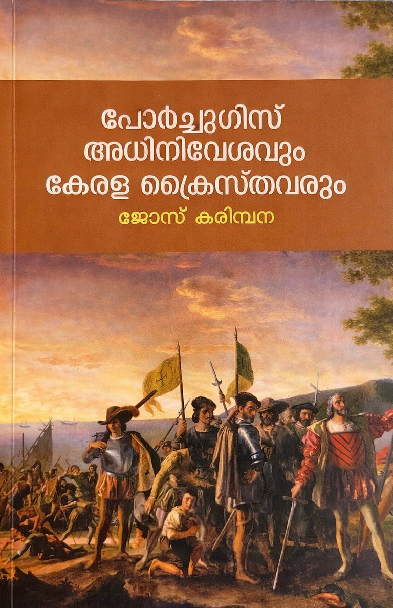

Author: ജോസ് കരിമ്പന
Review by: സിന്ധു ഉല്ലാസ്
ലൈബ്രറി കൗൺസിൽ സംസ്ഥാന കമ്മിറ്റി അംഗം, പുരോഗമന കലാസാഹിത്യസംഘം സജീവപ്രവർത്തകൻ, സിജെ സ്മാരക സമിതി സെക്രട്ടറി എന്നീ നിലകളിൽ പ്രവർത്തിക്കുന്ന കൂത്താട്ടുകുളം സ്വദേശി ശ്രീ ജോസ് കരിമ്പന എഴുതിയ പോർച്ചുഗീസ് അധിനിവേശവും കേരള ക്രൈസ്തവരും എന്ന ഗ്രന്ഥം സംസ്ഥാന ലൈബ്രറി കൗൺസിൽ പുസ്തകോത്സവങ്ങളിൽ ലഭ്യമാണ്.
കേരള ക്രൈസ്തവ ചരിത്രത്തിന്റെ പിന്നാമ്പുറങ്ങളിലൂടെ നടത്തിയ ഗവേഷണത്തിന്റെ ഫലമാണ് ഈ പുസ്തകം. വിദേശിയർ കേരളത്തിൽ കച്ചവടത്തിനായി വരികയും ക്രിസ്തുമതം സ്ഥാപിക്കുകയും ചെയ്ത കാലഘട്ടത്തിന്റെ ഏടുകളിലൂടെ ഒരു യാത്ര.
സംസ്ഥാന ലൈബ്രറി കൗൺസിൽ പ്രസിഡന്റും ചരിത്രകാരനും അധ്യാപകനുമായ ഡോ. കെ വി കുഞ്ഞികൃഷ്ണൻ ഇതിന്റെ ആമുഖം എഴുതിയിരിക്കുന്നു.
തീർച്ചയായും ചരിത്രാന്വേഷികളായ വായനക്കാർക്ക് ഒരു റഫറൻസ് ഗ്രന്ഥമായി സൂക്ഷിച്ചുവയ്ക്കാൻ ഉപകരിക്കുന്ന പുസ്തകമാണ് പോർച്ചുഗീസ് അധിനിവേശവും കേരള ക്രൈസ്തവരും.